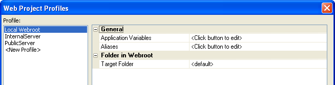
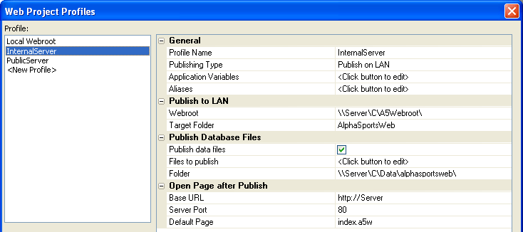
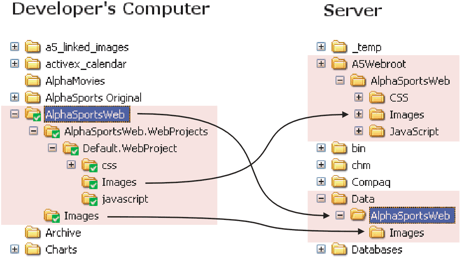
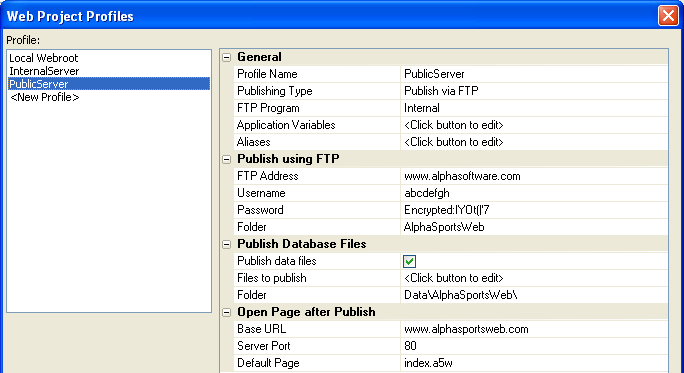
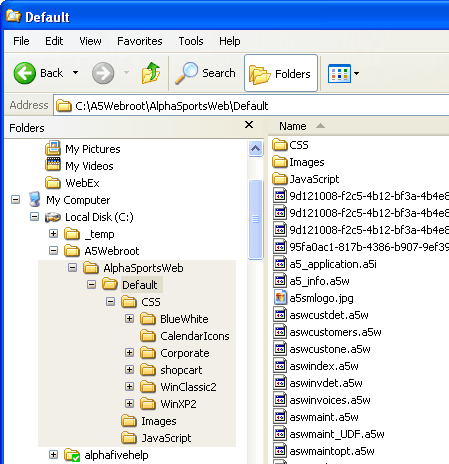

Configuration and Publishing
Local Webroot Profile
Your initial and default profile should be Local Webroot. Here you can test the appearance of your pages and components, and logic of your code. By default, AlphaSportsWeb does not use any Application Variables. There is only one set of aliases.
For local development: PathAlias.ADB_Path = =a5.get_path()
For publishing to a server: PathAlias.ADB_Path = c:\data\alphasportsweb

InternalServer Profile
The "InternalServer" profile is a template that you can modify and use for your internal (LAN) publishing activities. The assumption here is that you can publish your data using standard Windows file access. The profile publishes pages to the c:\A5Webroot directory and the data files to the c:\Data directory on the server.
There is only one set of aliases.
For local development: PathAlias.ADB_Path = =a5.get_path()
For publishing to a server: PathAlias.ADB_Path = c:\data\alphasportsweb
The default definition for aliases should be adequate for your local
development needs. To change the server alias, select General
> Aliases and click  .
.

The publishing process automatically copies all folders under the web project folder. Thus, the css, Images, and javascript folders appear under the c:\A5Webroot\AlphaSportsWeb folder on the server. Note the Publish to LAN > Webroot and Publish to LAN > Target Folder properties below.
The Publish Database Files > Folder property defines the target directory for the Alpha Anywhere database files. The Publish Database Files > Files to Publish property lists all database files, plus all the files found under c:\AlphaSportsWeb\Images on the development computer. These files are published to c:\Data\AlphaSportsWeb\Images on the server.

PublicServer Profile
The "PublicServer" profile is a template that you can modify and use for your external (FTP) publishing activities. The assumption here is that you can not publish your data using standard Windows file access. The profile publishes pages to the AlphaSportsWeb folder under the server's webroot and the data files to the Data\AlphaSportsWeb\ folder on the server.
 Note : The assumption
here is that the server administrator will create these folders and make
them accessible to your FTP program. It is unlikely that you will know
the actual (physical) location of these folders on the server.
Note : The assumption
here is that the server administrator will create these folders and make
them accessible to your FTP program. It is unlikely that you will know
the actual (physical) location of these folders on the server.
Also take note that the FTP Address, Username,
Password, and Base URL
values shown below are for illustration purposes only.
Again, these are values that you will define in coordination with the
server administrator.

Publishing
To initially publish AlphaSportsWeb to your local webroot, follow these steps.
In the Web Projects Control Panel select
 Publish.
to display the Publish Web Project dialog box:
Publish.
to display the Publish Web Project dialog box:Select "Local Webroot" in the Select Profile list.
Select All files in project in the Files to Publish section.
Clear Publish new or modified files only.
Click Clear Publishing History > Yes.
Click Publish. This action creates the folders highlighted below and copies all the project files to the appropriate locations. Note that your webroot may be defined to be a folder different from "C:\A5Webroot".

Publishing to a Server
To publish AlphaSportsWeb to a server, follow these steps.
In the Web Projects Control Panel select
Publish.
to display the Publish Web Project dialog box:Select "InternalServer" or "PublicServer" in the Select Profile list.
Select All files in project in the Files to Publish section.
Clear Publish new or modified files only.
Click Clear Publishing History > Yes.
Select Publish Database files.
Click Edit List to display the Select Database Files to Publish dialog.
Check the Select all tables/sets in the Database check box.
Click Add File and navigate to the AlphaSportsWeb\Images\ folder.
Select all the files in the folder and click Open.
Click OK.
Click Publish. This action creates the folders highlighted below and copies all the project files to the appropriate locations.
See Also
AlphaSportsWeb Explained, Web Projects, Profiles, and Publishing